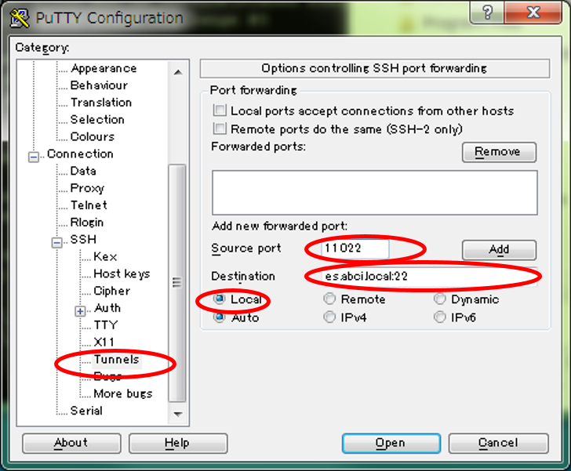
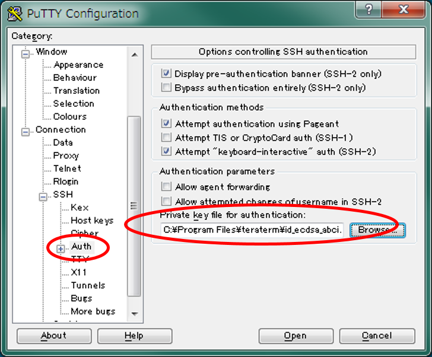

PuTTY
This section describes how to use PuTTY, a virtual terminal application available on Windows, for connecting to ABCI Interactive Node. To use OpenSSH or other command-line based clients, you can find an instruction at Connecting to Interactive Node.
In order to login to the interactive node, the following procedure is necessary.
- Set up an SSH tunnel configuration with PuTTY
- Login to the access server to create an SSH tunnel
- Login to the interactive node from another terminal via the SSH tunnel
SSH tunnel with PuTTY
-
Launch PuTTY, and set up an SSH tunnel configuration
click [Connection] - [SSH] - [Tunnels] and enter following information.
item value sample image  local port e.g., 11022 remote host and port es.abci.local:22 or es:22 (e.g., es.abci.local:22) remote port 22 -
click [Add] to add the configuration
Login to access server with PuTTY
-
Click [Connection] - [SSH] - [Auth], and specify a private key file.
item value sample image  private key file for authentication path of your private key file -
Open a session to access server with PuTTY
Click [Session], enter following information
item value sample image 
hostname as.abci.ai Click [Open] and enter your ABCI account and passphrase. Successfully logged in, the following screen displayed.
Warning
Be aware! The SSH session will be disconnected if you press any key.
Login to interactive node with PuTTY
-
Specify a private key file
Launch a new PuTTY screen, and enter your authentication information same as access server.
-
Open session to interactive node with PuTTY
Click [Session], enter following information to login an interactive server.
item vlue sample image 
host name localhost port port number which use SSH tunnel (e.g., 11022) Click [Open] and enter your ABCI account and passphrase. Successfully logged in, the following screen displayed.